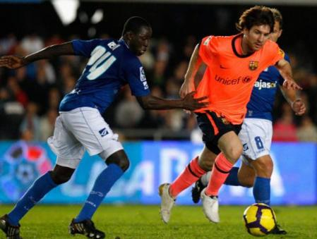

How inflation affects a football supporter

Photo: ArchiveBetween 2020 and September 2026, prices in Spain have risen by around 26% on a cumulative basis, according to the evolution of the CPI. Behind that cold figure lies a very concrete reality for millions of supporters, whether they follow Real Madrid or a modest club like Xerez CD: going to football —or simply following it— costs appreciably more today than before the pandemic. And not only because of the price of a ticket, but also in the rest of the daily life that makes being a supporter possible.
What it cost in 2020 and what it costs now
To get a real sense of what that cumulative 26% means, it is enough to look at a few very concrete prices that any supporter comes across. The official shirt of a club like Real Madrid, which a few years ago cost around 90-100 euros, today sells for more than 140 euros in its standard adult version, far above what general inflation alone would explain, because on top of rising production and transport costs comes the sportswear brands' own price repositioning.
Inside the stadium itself, or in any bar before or after the match, there are even more striking examples. A Coca-Cola that in 2020 might have cost around 1 euro in your usual bar can today be close to 2 euros in many areas, an increase of nearly 100%, far above the country's average inflation over that period. And in the weekly shop, something as basic as a kilo of tomatoes —key to any salad before or after going to the ground— has suffered occasional double-digit rises in the years of greatest inflationary pressure, with off-season price peaks far above those of 2020.
These examples are not the country's statistical average, but real cases any supporter will recognise: while the general CPI has accumulated 26% since 2020, there are products and services tied to match day that have risen considerably more, precisely because they combine general inflation with other factors (retail margins, energy costs in the hospitality sector, agricultural seasonality) that push the final price well above the average.
The season ticket, the first bill of the year
The season ticket remains, for many members, the most important fixed expense of the year as a supporter. Although the big clubs have avoided sharp increases so as not to drive away their most loyal fans, several have adjusted prices gradually since the pandemic, and several stadiums have undergone redevelopment work (the Bernabéu, Camp Nou, the Cívitas Metropolitano in its latest touches) that has been passed on, to differing degrees, to the season-ticket holder's bill. If the season ticket has not risen at the pace of the CPI, in practice that has meant an implicit cut in the club's margin, but for the pocket of the supporter who has indeed felt it, every other item has gone up, and by a lot.
Travelling to watch the team: the real price jump
This is one of the hardest blows. Fuel prices soared in 2021 and 2022 in the wake of the energy crisis and the war in Ukraine, and although they have come down from their peaks, they remain above 2019-2020 levels. For the supporter who covers 300 or 400 kilometres every fortnight to follow their team, that means:
- More spending on petrol or diesel per trip.
- Tolls that have also been revalued with inflation.
- More expensive train tickets (AVE included) and intercity coach fares.
- Hotels and accommodation for away trips requiring an overnight stay, with tourism among the sectors that have raised prices most since 2020.
For those who follow their team across Spain, the "logistics cost" of a season may have grown by several hundred euros compared with before the pandemic.
Match day: beer, a sandwich and parking
Inside the stadium itself, catering has followed the same curve as the country's hospitality sector. A beer, a sandwich or a coffee at the ground —or in the usual bar before the match— cost noticeably more today than in 2019. Spanish hospitality has been one of the sectors where the cumulative rise in energy, food and labour costs has been felt most, and those increases are passed directly on to the supporter's bill on match day.
Watching football without leaving home is not free either
Those who decide not to travel feel the blow too. Pay-per-view and sports streaming platforms have readjusted their rates in recent years, and on top of that comes the electricity bill —key for anyone hosting the supporters' club or getting friends round every matchday— which soared to historic levels in 2021 and 2022.
Shirts and merchandise: the luxury that has risen most
The official shirts of Spain's big clubs have become more expensive at retail in recent years, partly because of rising production and international transport costs, and partly because sportswear brands have passed on their own margin increases. Renewing the family's full kit —shirt, shorts, socks— for the new season today means a clearly bigger outlay than five years ago.
What it means in practice
If we add up the season ticket, travel, match-day catering, subscriptions and merchandise, an average supporter who follows their team with some intensity may be spending around 26% more a year today than in 2020, in line with cumulative inflation, and considerably more if their consumption profile is concentrated in the items that have risen most (energy, food and fuel). And that is without their income necessarily having grown at the same pace. Wages in Spain have risen over these years, but more moderately than prices in several of them, especially in 2021 and 2022, which translates into a real loss of purchasing power for a good part of the fanbase.
When the team is a modest one, the blow hurts twice as much
All of the above is made far worse when the team is not a giant with millions in television revenue, but a modest club that lives off its members, the bar on the corner and the enthusiasm of its people. That is the case of clubs like Xerez CD, the historic side from Jerez de la Frontera which, after an administrative relegation and a refounding as a sporting public limited company, plays today in Segunda Federación, the fourth tier of Spanish football, a long way from the Primera División in which it once competed more than a decade ago.
For the fanbase of a club like that, inflation is not a relative nuisance: it is a direct threat to the very viability of continuing to go to the ground. Some key differences compared with the supporters of a big club:
- No financial cushion. A Segunda Federación club has no Champions League income or significant television contracts to absorb part of the rise in costs. Any increase in the stadium's electricity bill, in pitch maintenance or in the team's own travel tends to be passed on sooner and more directly to the price of the membership card.
- The member, the club's backbone. At clubs like Xerez, the membership card is not a whim: it is the main source of income and what keeps the club alive. When that member, often retired or on a modest wage, sees their weekly shop and their bills rising, the first "dispensable" expense they consider cutting is precisely that card.
- Longer, less viable away trips. Regional and Segunda Federación divisions have geographically very wide groups. A trip to Melilla, to Almería or to the Murcian coast by car or coach, with diesel above 2019 prices, represents a disproportionate financial effort for a fanbase that, moreover, has none of the support or logistics of a top-flight club.
- Less room to raise prices. A modest club cannot raise ticket or season-ticket prices at the pace of inflation without risking empty stands, because its public has, on average, less disposable income than that of the big city clubs. The result is a financial burden that ends up translating into worse facilities, tighter squads or, in the worst cases, the club's very survival, as Xerez itself experienced with its administrative relegation.
In short: if the supporter of a big club feels inflation in their pocket, the supporter of a modest one feels it in their pocket and in the uncertainty over whether their team will still exist in the same conditions next season.
You are a number: the cold logic of professional football
There is an uncomfortable question many supporters ask themselves every time they receive their season-ticket renewal notice: does the club really care whether I, in particular, can afford it? In professional football at the highest level, the answer a good part of the fanbase perceives is no, and not without reason.
Spain's big clubs have long membership waiting lists and a demand for tickets —especially for the most attractive fixtures— far greater than the supply of available seats. In that context, if a member decides not to renew because the season ticket, the travel or match day has gone beyond their budget, the club knows that seat will not stay empty: there are dozens of people on the waiting list willing to take it. From this purely commercial logic, each individual supporter counts for little on the balance sheet; what matters is the aggregate, stadium occupancy and total revenue, not whether this or that particular person can keep paying for the seat they have always had.
This critical view holds that the bigger and more high-profile the club, the more the personal bond between the institution and each individual supporter dissolves, and the more the relationship resembles that of any other mass-consumption product: if one customer stops buying, the business does not suffer because ten more are waiting to do so. It is no coincidence that in recent years premium season-ticket categories, flexible membership packages or dynamic tickets whose price rises for the highest-demand matches have proliferated: they are formulas designed to maximise revenue per seat, not to protect the lifelong supporter from inflation.
That reasoning changes radically in modest football. At a club like Xerez, losing a member is not an irrelevant statistic: it is a tangible part of the budget that disappears and that, in all likelihood, will not be replaced by anyone on a waiting list, because those lists do not exist. There the supporter remains, for better and for worse, irreplaceable; the problem is that, even being so, they do not have the growing purchasing power that would let them sustain that relationship when general prices rise faster than their income.
The final paradox is this: in the football where the most money circulates, the individual supporter counts for less because there is always someone else willing to take their place; in the football where the least money circulates, they count for more, but they also have less financial room to keep proving it.
Beyond football: inflation in the supporter's daily life
The supporter, as well as being one, is above all a person with a household economy to sustain, and that is where the inflation accumulated since 2020 is felt even more strongly:
- The weekly shop. Food has been one of the items that has risen most since 2021, with year-on-year peaks above 10-15% in basics such as oil, dairy or meat at the toughest moments of the energy crisis. The money that used to be left over for the bar before the match now often stays at the supermarket.
- The mortgage. Those with a variable-rate mortgage have felt first hand the rise in interest rates that the European Central Bank applied precisely to combat that inflation. The Euribor went from negative territory in 2021 to above 4% in 2023, which on many average mortgages has meant paying between 200 and 400 euros more a month. That money is, quite directly, what is no longer available for the season ticket, the away trips or the team's merchandise.
- Diesel and petrol. It does not only affect trips to away matches: it also affects the everyday car, the commute to work, taking the children to school. With fuel still above pre-pandemic levels, every full tank is a constant reminder that money goes less far.
- Energy at home. Electricity and gas drastically increased household bills in 2021 and 2022, and although they have moderated, they have not returned to previous levels. For many families, this has meant rethinking for the first time whether they "can afford" certain leisure expenses, football among them.
All of this makes up the full picture: the supporter not only pays more to watch their team, but arrives at that decision with less room in their overall budget, because the weekly shop, the mortgage and the petrol tank have eaten up a good part of whatever pay rise they may have had, if they have had one at all.
The fanbase's response
Faced with this scenario, many supporters have changed their habits: fewer trips to away matches, more shared supporters' clubs to split the cost of streaming platforms, buying merchandise in the sales or second hand, and more careful management of which fixtures they decide to watch at the stadium rather than follow on television.
Being a football supporter in Spain has never been free, but 26% cumulative inflation between 2020 and September 2026 has turned that hobby into a budget item that more and more households scrutinise closely before deciding how many matches they can attend this season.
Note: the cumulative inflation figures (26% between 2020 and September 2026) are taken as the starting reference for this article; the specific prices per item of expenditure are illustrative estimates based on that evolution, not official data from particular clubs or suppliers. The real impact on each supporter varies according to their club, city of residence and consumption habits.
🇪🇸 Leer en español ← Back to home